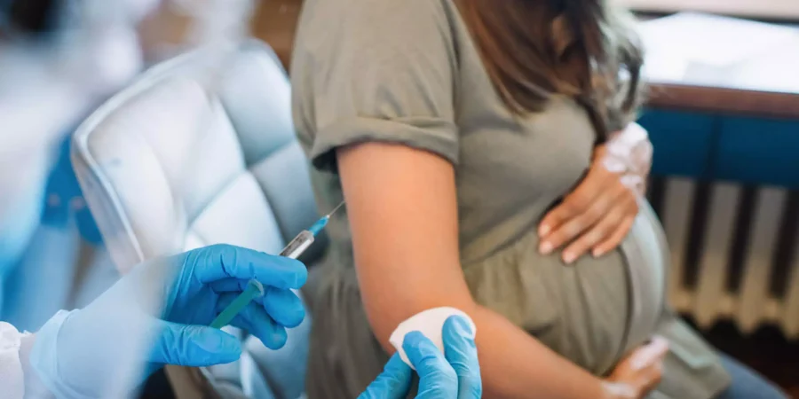
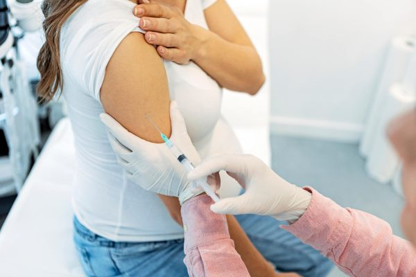
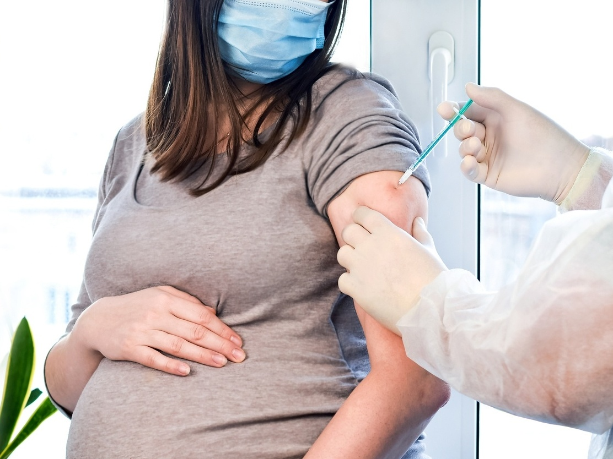

Guia de Vacinação para Gestantes
Importância da Vacinação para Gestantes
Durante a gestação, a saúde da mãe está diretamente ligada ao bem-estar do bebê. A vacinação é uma forma crucial de proteger ambos, já que os anticorpos produzidos pela mãe são transferidos para o bebê através da placenta e, posteriormente, pelo leite materno. Isso oferece uma proteção significativa durante os primeiros meses de vida da criança.
A Organização Mundial da Saúde (OMS) recomenda enfaticamente a vacinação durante a gestação como uma medida prioritária de saúde pública.

Vacinas Indicadas para Gestantes
Vacina Influenza (gripe)
A vacina contra a gripe protege contra os principais tipos de vírus influenza, prevenindo complicações como pneumonia, que podem ser graves durante a gestação. Ela é segura e recomendada a partir do primeiro trimestre de gravidez. É importante lembrar que essa vacina deve ser tomada anualmente.
Vacina dTpa
A vacina dTpa protege contra três doenças sérias: difteria, tétano e coqueluche. A coqueluche, em particular, é uma doença altamente contagiosa que pode ser transmitida para o recém-nascido, causando complicações severas. A dTpa deve ser administrada a partir da vigésima semana de gestação em todas as gestações.
Vacina dT
A vacina dT é essencial para prevenir difteria e tétano, duas doenças graves que podem ter consequências fatais, especialmente para o recém-nascido. Ela é recomendada para gestantes que ainda não completaram o esquema vacinal.
Vacina Hepatite B
A hepatite B é uma doença viral que pode causar danos crônicos ao fígado, incluindo cirrose e câncer. A vacinação contra hepatite B é fundamental para proteger tanto a mãe quanto o bebê. Gestantes que não se vacinaram antes ou que não completaram as três doses devem iniciar ou completar o esquema vacinal durante a gravidez.
Vacina Covid-19
As vacinas contra a Covid-19 são eficazes na prevenção de doenças graves e complicações causadas pelo SARS-CoV-2, incluindo a variante ômicron. A vacinação é recomendada em qualquer fase da gestação para proteger a mãe e o bebê.

Vacinas para Situações Especiais
Em casos de doenças crônicas, como doenças cardíacas, pulmonares ou diabetes, ou em situações de risco, o médico pode recomendar vacinas adicionais, como as vacinas contra hepatite A, hepatite A e B, pneumocócicas, meningocócicas e febre amarela. Essas vacinas devem ser avaliadas e prescritas pelo médico que acompanha o pré-natal.
Quando Tomar Cada Vacina?
O momento certo para tomar cada vacina durante a gestação varia de acordo com o tipo de imunizante, a orientação médica e o histórico vacinal da gestante. Por exemplo:
- 1º trimestre: Vacinas contra Influenza, Hepatite B, dT e Covid-19.
- 2º trimestre: Vacina dTpa.
É crucial seguir o intervalo correto entre as doses para garantir a máxima eficácia da vacinação.
